| 상품 | 군마트 | 쿠팡 | 차이 | |
|---|---|---|---|---|
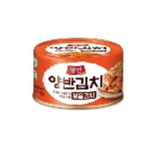 | 동원 양반 캔볶음김치 160g | 1,270원 | 2,738원 | -54% |
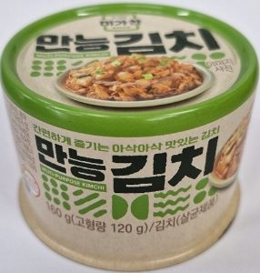 | 코리아 미가찬 만능김치 160g | 2,260원 | 4,383원 | -48% |
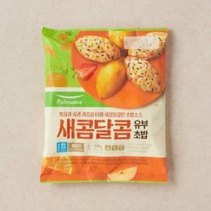 | 풀무원식품 달콤유부초밥4인 330g | 2,910원 | 5,480원 | -47% |
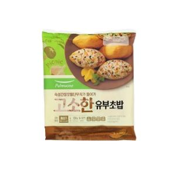 | 풀무원식품 고소한유부초밥4인 330g | 3,260원 | 5,480원 | -40% |
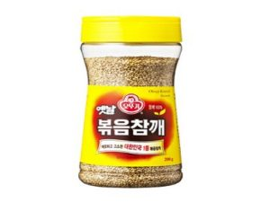 | 오뚜기 옛날볶음참깨 200g | 3,580원 | 5,790원 | -38% |
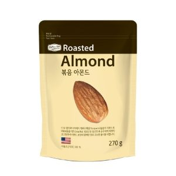 | 볶음아몬드 270g | 5,340원 | 8,570원 | -38% |
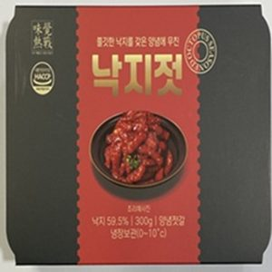 | 낙지젓 300g | 8,090원 | 11,520원 | -30% |
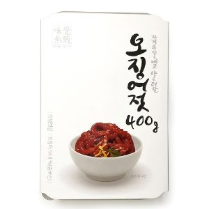 | 정성식품 오징어젓400g | 6,960원 | 9,790원 | -29% |
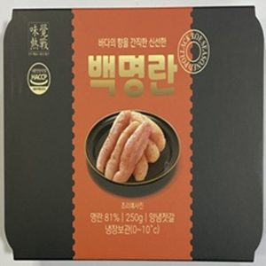 | 백명란 250g | 7,980원 | 8,900원 | -10% |
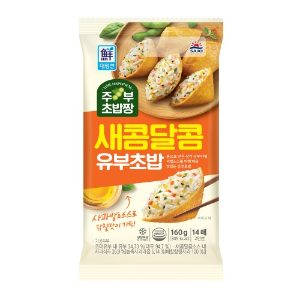 | 사조대림 주부초밥짱 새콤달콤유부 160g | 1,850원 | 2,029원 | -9% |
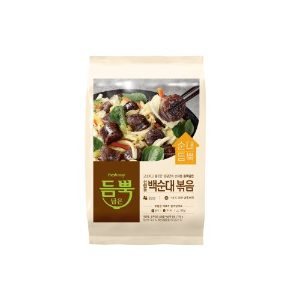 | 프레시지 듬뿍담은 신림동 백순대 볶음 705g | 9,700원 | 9,900원 | -2% |
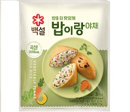 | 씨제이제일제당 밥이랑야채 27g | 1,640원 | 1,593원 | +3% |
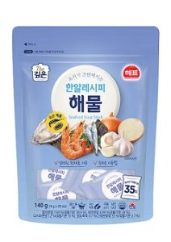 | 사조대림 한알레시피해물 140g | 6,140원 | 5,397원 | +14% |
반찬 말고 다른 것도
더 이상 직접 비교하지 마세요.
군마트 상품을 한곳에 모아 PX 가격과 온라인 가격을 쉽게 비교할 수 있습니다.
이게 실제 화면이에요. 상품을 누르면 바로 열립니다.
국방가족 분들이 조금이라도 편하게 군마트를 이용하셨으면 하는 마음으로 만들었습니다.
국방가족을 위한 작은 재능기부입니다.